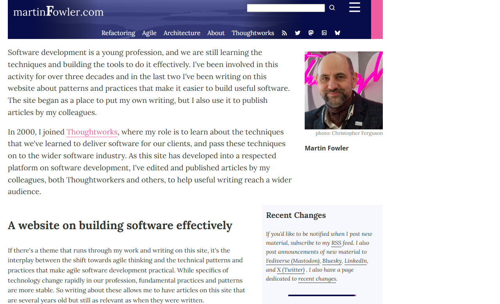
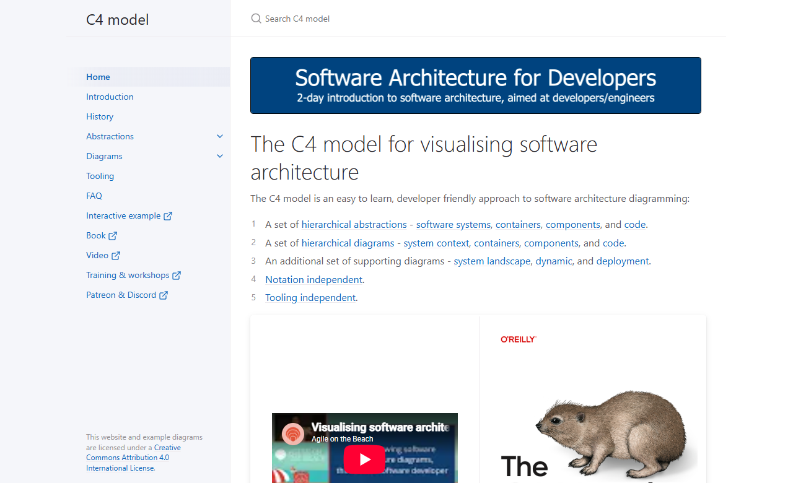
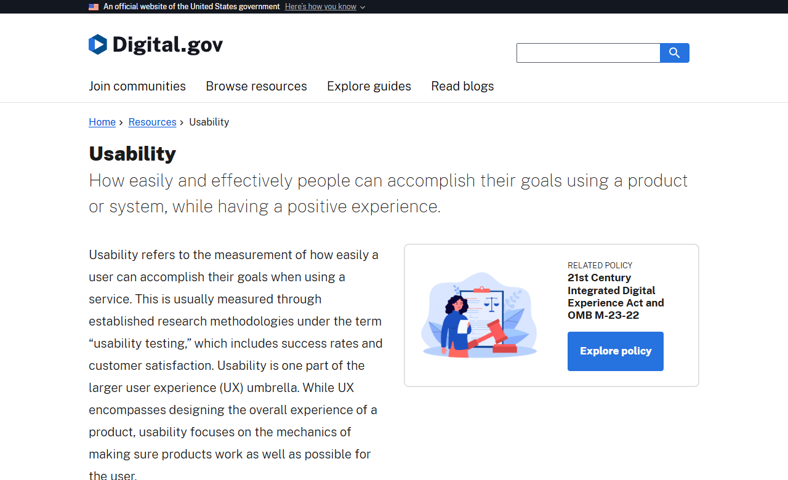

| Vídeo | Projeto | O que faz | Pasta de origem | |
|---|---|---|---|---|
| sem vídeo |  | martinfowler.com | Arquitetura e padrões de sistema: camadas, DDD, microsserviço, event-driven. | fora do GitHub (Bitbucket / site oficial) |
| sem vídeo |  | c4model.com | Modelo C4: como desenhar contexto, containers, componentes e código. | fora do GitHub (Bitbucket / site oficial) |
| sem vídeo |  | usability.gov | Guia de UX e usabilidade do governo dos EUA: métodos, pesquisa e checklist. | fora do GitHub (Bitbucket / site oficial) |
| sem vídeo | baymard.com | Pesquisa de e-commerce: checkout, busca, filtros e por que o usuário desiste. | fora do GitHub (Bitbucket / site oficial) |